(1)
SolveAlwaysでxについての恒等式を解く。
In[228]:=

Out[228]=

文字bについて解かれているので、rについて解きなおして、rをp,bで表す。
In[229]:=

Out[229]=

これを用いてqもp,bで表す。
In[230]:=

Out[230]=

(2)
cをp,bで表して、
In[239]:=
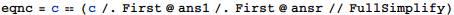
Out[239]=
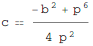
これに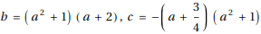を代入すると
In[245]:=
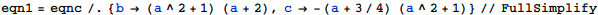
Out[245]=
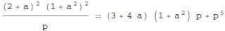
両辺にpをかけて、h(p)==0の形にしたときの左辺について、pのべき乗の係数を取り出す。
In[281]:=

Out[281]=
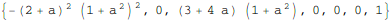
また、与えられた式についても同様にpのべき乗の係数を取り出す。
In[282]:=
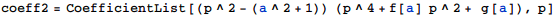
Out[282]=
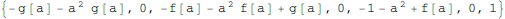
この2つの係数リストが等しい、という方程式を解くと
In[283]:=
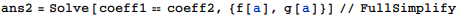
Out[283]=
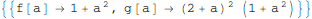
aをtに書き換えて、求めるf(t),g(t)を得る。
In[284]:=
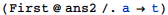
Out[284]=
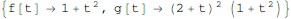
(3)
In[301]:=
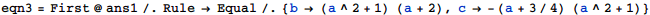
Out[301]=
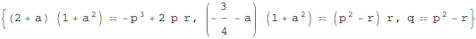
In[304]:=
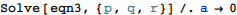
Out[304]=
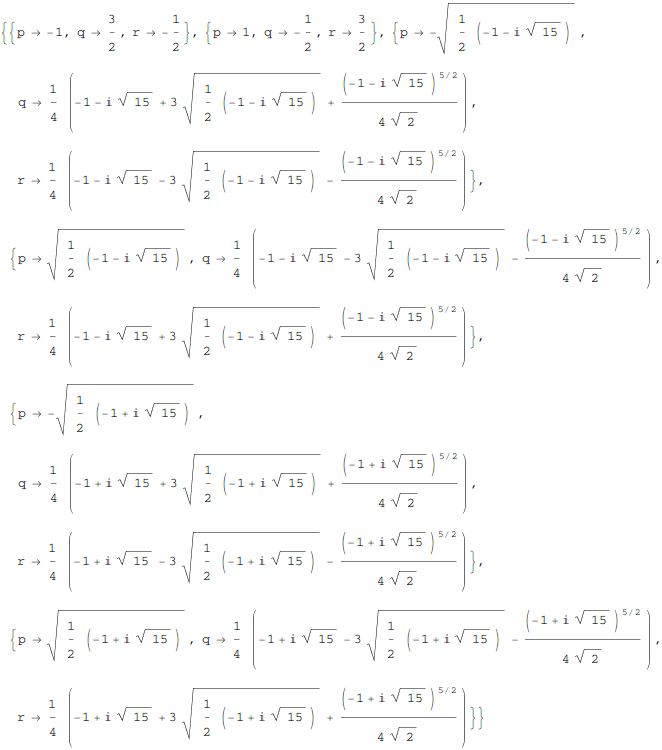